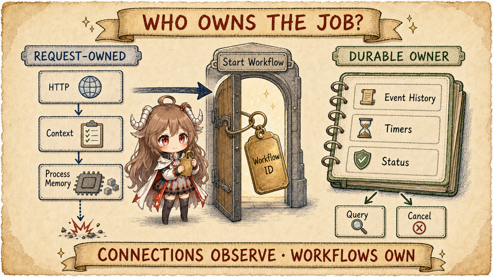
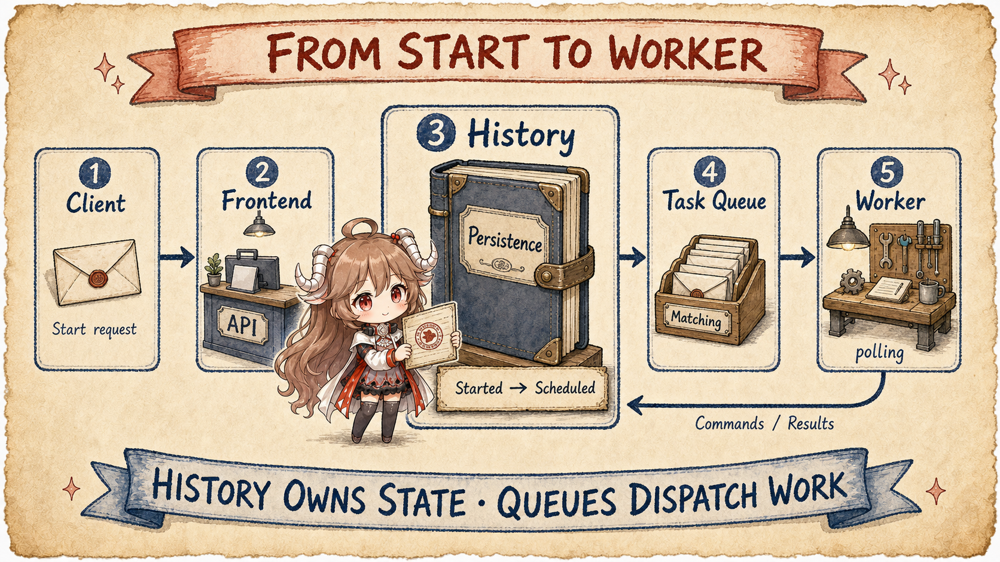
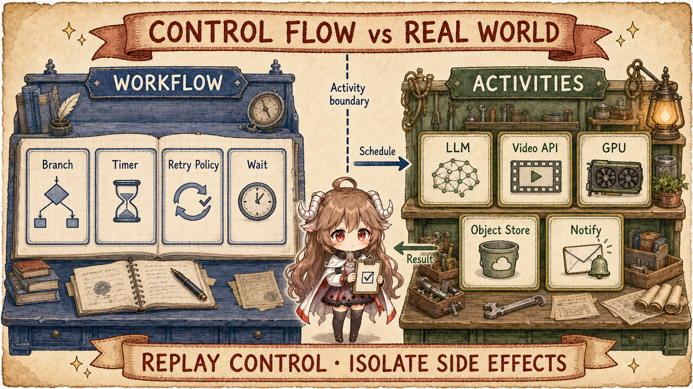
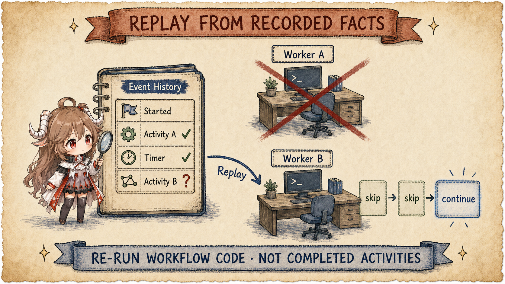
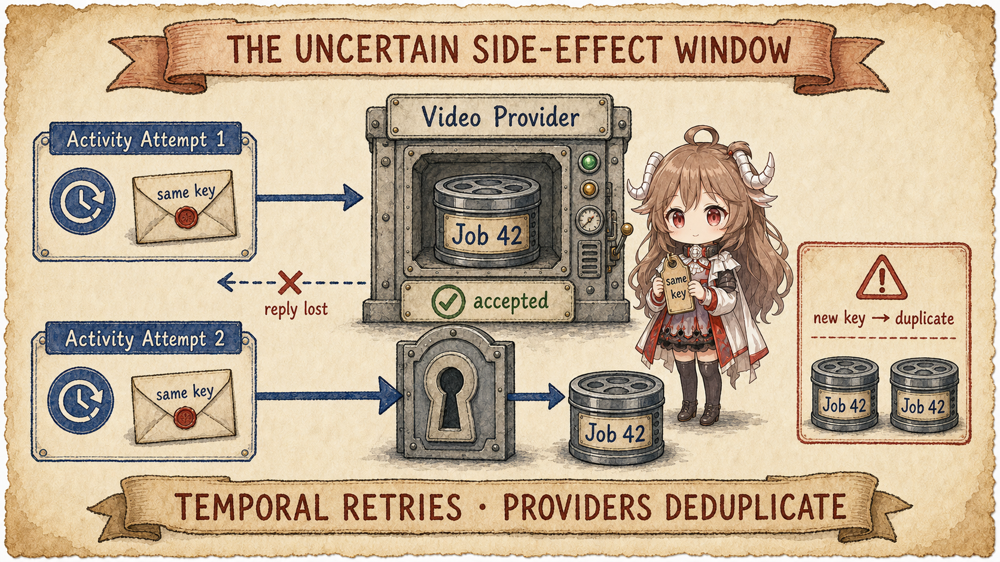
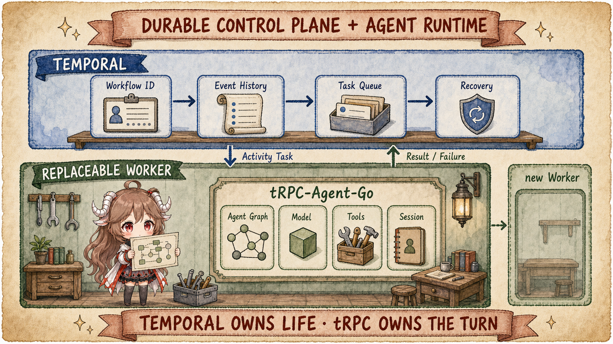

Consider a concrete product request. A user supplies a song and a visual direction. The system writes a treatment, splits it into eight shots, submits those shots to video models or GPU workers, retries failures, normalizes color, adds subtitles, composes the final cut, uploads it, and notifies the user. The path may take twenty minutes, or hours once quotas, queues, and human review enter the picture.
1. First, watch an ordinary backend lose the music video
The most direct implementation starts a goroutine after the business API receives an HTTP request: call the LLM, submit eight shots, poll for results, and compose the final cut. As long as the request and process remain alive, that code can work. The trouble begins halfway through.
- After a browser refresh, the generation may still be running, but the user no longer knows where to find it.
- After a pod restart, the current shot, retry count, and waiting state disappear with process memory.
- If the video provider accepted a request but its response vanished, the backend sees only a timeout; submitting again may pay for a duplicate job.
These failures look like separate frontend, process, and network problems. They share one gap: progress exists only inside this request and process. More error branches can handle failures the function observes; they cannot give state back to a process that no longer exists.
2. Temporal in plain language: the job can live without a living process
One-sentence definition: Temporal is a workflow platform that records long-running job progress outside the process so a new process can continue it. It does not generate video, and it is not another agent framework. It remembers which job this is, what has finished, what it is waiting for, and what should happen next.
Start with only four building blocks:
- Job card (Workflow Execution): the durable identity of one concrete job—here, “generate this music video for user 42,” not an abstract code definition.
- Fact log (Event History): the job's ordered record of what started, what was scheduled, and which step completed.
- Flow rules (Workflow): the decisions about what comes next, such as “compose only after all eight shots finish.” They read history but do not call the outside world directly.
- Real action (Activity): a call to the LLM, video provider, object store, or notification API whose result goes back to the job card.
Put those blocks around one concrete object and the following teaching record emerges. It is not a Temporal SDK request; it is the unit we will keep carrying through the article:
Job identity: mv-20260710-42
Raw input: song://summer.wav + “neon highway, eight shots”
Flow rules: treatment -> parallel shots -> acceptance -> compose -> notify
Confirmed fact: treatment at object://mv-42/treatment.json
Waiting on: provider job vid-8831 for scene-03
Final artifact: not produced yet
User-visible state: 6 / 8 shots completeThe original audio, treatment, and video bytes belong in object storage. Identity and progression facts belong in Temporal. “6 / 8” is a product projection from Workflow state to the UI. These locations should not collapse into one giant state object: large artifacts do not belong in history, and UI state must not become the authority for completion.
Business-hosted Worker processes run Workflow and Activity code. A Worker is not a fifth piece of durable state; it is a replaceable executor. A useful memory aid is: Temporal Service keeps the job card and fact log; a Worker is only a temporary person doing the work. Durable does not mean that one goroutine lives forever. It means the goroutine may disappear while the job identity and completed facts remain. That is the persistence described by the official Workflow Execution overview.

2.1 Follow the same music video from start to finish
- Create the job: the business API starts a Workflow Execution with a stable business ID, then it can return the HTTP response.
- Record the starting point: Temporal writes “this music video started” before handing a small decision task to a Worker.
- Decide the next step: the Worker runs the Workflow; seeing no treatment yet, the Workflow schedules a “write treatment” Activity.
- Touch the real world: another Worker runs the Activity and calls the LLM or video provider; the returned result is recorded in history.
- Wait and hand off: shot generation holds no Worker open. When a callback, timer, or poll result arrives, any available Worker can read history and decide what follows.
- Finish and observe: composition writes the video to object storage, a notification Activity sends the message, and a reopened browser queries the same execution ID.
Those six steps are the main route. Task Queues, replay, Signals, heartbeats, and idempotency keys are protections added when Workers can disappear and external calls can time out.
Reading contract. We keep following this one music video. By the end, you should be able to explain Temporal in your own words, name the four building blocks, replay the job in order, say what Workers and the fact log may change, explain why code upgrades must respect replay, and identify which external side effects still require business idempotency.
Evidence boundary. Temporal platform semantics come from official documentation and the fixed temporalio/temporal source snapshot. The tRPC-Agent-Go comparison uses its public source snapshot. Provider-side deduplication, cancellation, and callback internals are outside Temporal's visible boundary, so this article discusses only the integration contract.
2.2 Three overloaded uses of “frontend” and “worker”
With the main route established, the remaining name collision is easier to remove. The browser frontend is the user interface. Temporal's Frontend Service is the cluster API surface. A Temporal Worker is a user-hosted process that runs Workflow and Activity code. That worker is also different from a child agent that an agent framework may call a worker.
| Term | Meaning here | What it owns |
|---|---|---|
| Client / UI | Browser, app, or business API. | Starts jobs, stores business IDs, and renders state. |
| Temporal Service | Frontend, History, Matching, and persistence. | Execution identity, history, queues, and timers. |
| Temporal Worker | A process polling Task Queues and running user code. | One transient Workflow Task or Activity attempt. |
| Agent worker | A delegated role or background agent run. | Agent semantics, not durable execution by itself. |
3. How a start request becomes a recoverable workflow
Now map the job card to implementation. The start request does not send that whole teaching record verbatim. It answers three ordinary questions: which business job is this, which workflow rules govern it,
and which group of Workers can handle it. The SDK expresses those answers as Workflow ID, Workflow Type, Task Queue, and input before calling StartWorkflowExecution.
The repository README is explicit that this repository contains the
Temporal Server;
language SDKs implement Workflows, Activities, and Workers. Temporal is a platform plus SDKs, not an imported library that silently takes over arbitrary goroutines.

3.1 Frontend creates an execution instead of holding a connection
The service entry point
WorkflowHandler.StartWorkflowExecution
prepares the request, resolves the namespace, and delegates creation to History Service. Its comment says that the call creates a
WorkflowExecutionStarted event and schedules the first Workflow Task. Once Start succeeds, a connected browser is no longer a condition for execution.
3.2 History records facts before Workers advance them
History Service maintains mutable state and an append-only Event History for each Workflow Execution.
The architecture document states the central design directly: complete workflow state can be rebuilt through replay;
Workflow code must be deterministic and side-effect free, while Activity code must be idempotent or explicitly non-retryable.
See docs/architecture/README.md.
Let the same music video advance several steps. Fields and intermediate events that do not affect this explanation are simplified, but the order among actors, Commands, and accepted events is the important part:
Client -> Temporal Service
StartWorkflowExecution(workflow_id=mv-20260710-42, input_ref=object://mv-42/input.json)
Temporal Service -> Event History
WorkflowExecutionStarted
Workflow Worker -> Temporal Service
Command: ScheduleActivity(write-treatment)
Temporal Service -> Event History
ActivityTaskScheduled
Activity Worker -> Temporal Service
ActivityTaskCompleted(result_ref=object://mv-42/treatment.json)
Workflow Worker -> Temporal Service
Command: ScheduleActivity(submit-scene-03)
Activity Worker -> Temporal Service
ActivityTaskCompleted(provider_job_id=vid-8831)
Webhook API -> Temporal Service
WorkflowExecutionSignaled(scene-03-ready, artifact_ref=object://mv-42/scene-03.mp4)
A Worker takes the Workflow Task, replays the Workflow function until it waits on an Activity, Timer, Signal, or Child Workflow,
and returns Commands describing what should happen next. Matching's
PollWorkflowTaskQueue
shows the polling boundary that connects replaceable Workers to queued work.
The easy-to-miss distinction is: a Worker proposes Commands; Temporal Service accepts state transitions and appends facts. A proposal that never reached the Service may disappear with the Worker. A fact already in Event History becomes input to the next Worker.
| Actor | What it can read | What it can change | What it cannot impersonate |
|---|---|---|---|
| Client / business API | Business input, Workflow ID, query results. | Request start, Signal, Update, or cancellation. | It cannot rewrite Event History directly. |
| Workflow Worker | Workflow state projected from history. | Return Commands for Timers, Activities, and Child Workflows. | Its local memory is not authoritative state. |
| Activity Worker | One Activity input and heartbeat details. | Perform effects and return result, failure, or heartbeat. | It cannot declare the whole Workflow complete. |
| Temporal Service | Persisted execution state, queues, and timers. | Accept events, dispatch Tasks, and drive recovery. | It does not generate video or judge content quality. |
4. Workflows own control flow; Activities touch the world
Why not call the LLM, video provider, storage service, and notification API directly inside the Workflow function? Recovery depends on replay. The same Workflow code may run many times and must emit the same Commands for the same history. Reading wall-clock time, choosing random values, or making a direct provider call would make that path drift. Temporal SDKs therefore push non-determinism and side effects into Activities.

4.1 Boundaries for one music video
| Step | Suggested boundary | Reason |
|---|---|---|
| Write and split the treatment | LLM Activity returning structured shots. | The recorded result prevents repeated LLM calls during replay. |
| Submit each shot | One Activity or Child Workflow per shot. | Independent retry, rate limits, cancellation, and visibility. |
| Wait for generation | Signal/webhook, async completion, or polling Activity. | Waiting consumes no dedicated Worker thread. |
| Compose and upload | Long Activity writing to object storage. | History stores URIs and metadata, not video bytes. |
| Notify the user | Separate idempotent Activity. | A composition retry should not resend notifications. |
Temporal's own Activity overview names media transcoding, LLM calls, and large downloads as representative use cases. It recommends splitting larger functionality into smaller Activities for tighter recovery, timeouts, and idempotency. See Temporal Activities.
4.2 Waiting is not a sleeping goroutine
After the video provider returns a job ID, a Workflow may wait on a Signal, Timer, or Activity Future. The wait is reconstructible from server state and needs no pinned application thread. A webhook can Signal the Workflow; a user style change or cancellation can alter later control flow through Signals, Updates, or cancellation requests. Their read/write contracts are documented in Workflow Message Passing.
5. Recovery starts after the last recorded fact
Event History does not serialize a Worker stack. It records state transitions accepted by the Service. A new Worker starts the Workflow function from the beginning; the SDK supplies recorded Activity results, Timers, and Signals and checks generated Commands against history. Real forward progress begins only at the first action that has no recorded outcome.

5.1 Browser, Workflow Worker, and Activity Worker failures differ
| Failure | What Temporal observes | Recovery |
|---|---|---|
| Browser or SSE disconnect | No Workflow state change. | The client later queries or resubscribes by business ID. |
| Workflow Worker crash | An incomplete or timed-out Workflow Task. | Another Worker replays history and emits Commands. |
| Activity Worker crash | No completion arrives; a timeout eventually fires. | The Retry Policy schedules another Activity attempt. |
| Temporary Service outage | Committed history remains in persistence. | Dispatch resumes; actual guarantees depend on cluster and storage deployment. |
For a long Activity, heartbeats provide liveness, cancellation delivery, and application-level progress checkpoints.
A compositor processing 8,000 frames may heartbeat its latest completed chunk so the next attempt can continue after a Worker loss.
The official failure guide explains Start-To-Close timeout and heartbeat payload recovery:
Detecting Activity Failures.
The server entry point documents the same liveness/progress split in
RecordActivityTaskHeartbeat.
5.2 Processes may change; the Workflow semantics behind old executions cannot change arbitrarily
“Any Worker can take over” has one more condition: its Workflow code must still be able to interpret existing history. Suppose old history says “compose after a shot becomes ready,” while a new build unconditionally inserts a moderation Activity at that point. During replay, the new Command sequence may no longer match history. Process replacement solves machine failure; it does not automatically solve an incompatible code rollout.
Old execution history: scene-ready -> compose
Unsafe direct replacement: scene-ready -> moderate -> compose
A safe rollout must answer:
1. Does compatible code keep handling old executions, or are they pinned by version routing?
2. Is the new branch introduced through the SDK's patch / version mechanism?
3. Can real Event Histories pass replay tests before rollout?
4. How do old and new executions roll back if the release fails?Temporal's current Worker Deployments guide recommends Worker Versioning as the default for safely deploying new Workflow code and keeps patching as a compatibility path when versioned deployments are unavailable. For AI jobs that span tens of minutes or hours, this is part of durable execution across releases, not a deployment footnote.
6. The dangerous gap: the provider succeeded, but the reply vanished
A common misreading is that Temporal makes every step exactly once. Workflow control can produce an effectively-once execution effect through history, but an Activity still crosses an uncertain boundary into an external system.
submit_scene(scene-03)creates a paid provider job.- The Worker or network fails before receiving the job ID.
- Temporal only knows that the Activity did not complete and retries it.
- Without a stable external identity, the second request may create another job.

6.1 Bind idempotency to the logical action
A practical design derives a stable key from workflowId + sceneId + operation and asks the provider, or an internal submission ledger, to deduplicate on it.
Persist the returned provider job ID as the Activity result and perform later waits and reads against that ID.
Without provider idempotency, a local ledger narrows the window but cannot erase the fundamental “remote success before local record” ambiguity on its own.
{
"workflow_id": "mv-20260710-42",
"scene_id": "scene-03",
"operation": "submit-video",
"idempotency_key": "mv-20260710-42:scene-03:submit-video"
}6.2 Cancellation is a cooperation protocol, not remote kill
Workflow cancellation can stop unscheduled work and propagate cancellation to running Activities. An Activity must heartbeat or check its context to receive it promptly; the provider must expose a cancellation API before business code can stop the remote GPU job. “Canceled in Temporal” therefore does not automatically mean “all external compute stopped instantly.”
6.3 Provider success, Workflow completion, and product delivery are three states
Another common mistake is to treat the provider's succeeded status as product completion.
A callback proves only that the provider claims the job ended. Business code still needs to verify that the object is readable, format and duration are valid,
every requested shot exists, cancellation did not win the race, and the accepted artifact reference was recorded in the Workflow.
Only then should the product mark the music video downloadable or publishable and decide when to notify the user.
provider produced
-> Activity verifies artifact and cost
-> Temporal records artifact_ref
-> Workflow satisfies every completion condition
-> product marks the music video deliverable
-> notification is sent idempotently
if any acceptance gate fails
-> do not claim delivery
-> retry, compensate, or route to human reviewThis separates “an external file exists,” “the flow has completion evidence,” and “the product authorizes delivery.” Temporal can preserve and recover the acceptance chain, but business code still owns quality rules, budget limits, and final publication authority.
7. tRPC-Agent-Go builds inside a Worker; Temporal owns life outside it
Temporal is not another GraphAgent. tRPC-Agent-Go owns models, tools, subagents, event streams, and graph-node execution. Temporal owns long-running identity, state, timers, retries, messages, and recovery across process boundaries.

7.1 The durable-looking pieces already in tRPC-Agent-Go
First separate what is actually connected in the fixed snapshot. agent/taskrun defines a replaceable Controller interface,
while the bundled implementation used by the examples is inprocess.Service. A distributed durable controller is an extension surface for products,
not a completed main path merely because the interface exists. Graph checkpoints and detached cancellation are implemented, but each covers only the local boundary below.
| Capability | Status in the snapshot | What it solves now | What it does not automatically solve |
|---|---|---|---|
WithDetachedCancel | An implemented RunOption. | A run can survive parent cancellation inside the current process. | Process restart and multi-node recovery. |
| Dynamic Workflow | Implemented; documented as a foreground, one-shot first version. | Temporary Python orchestration across Agents. | It does not persist execution state for cross-process recovery. |
| Graph checkpoint | An implemented checkpoint / resume mechanism. | State/frontier persistence, explicit resume, and time travel. | Dead-owner detection, lease takeover, and Activity semantics. |
taskrun.Controller | The interface exists; the bundled controller is in-process. | Run ID, status, wait, cancel, and child sessions. | Distributed storage, queue, lease, and takeover belong to the product. |
The source makes these boundaries explicit.
WithDetachedCancel
changes parent-context cancellation propagation only. Dynamic Workflow calls its first version
foreground and one-shot;
the Graph documentation presents checkpoints as the basis for
explicit recovery and time travel;
taskrun says a multi-node controller needs
external storage, queues, leases, and cross-node cancellation;
and the bundled FileStore's
normalizeLoadedRuns
marks unfinished runs as interrupted by a prior runtime restart instead of resuming them.
7.2 Coarse and fine-grained integrations
A coarse integration runs an entire runner.Run as one Activity. It is easy to adopt, but a mid-run Worker crash may repeat the whole invocation,
so LLM and tool effects need strong idempotency. A fine-grained integration models LLM calls, tool calls, video submission, and human waits as Activities or Child Workflows.
It provides better recovery points and visibility, but turns the Agent loop into a durable state machine and costs much more to build.
Put the same scene-03 through both designs and the replay boundary becomes concrete. This table is an integration contract, not a Temporal adapter already bundled with tRPC-Agent-Go:
| Integration | Representative durable unit | What Temporal records | After a mid-run Worker crash |
|---|---|---|---|
| Coarse | Whole Agent run: run ID, input reference, idempotency scope. | One Activity's scheduled / completed facts and final artifact reference. | If the result never reached history, the whole runner.Run attempt may repeat. |
| Fine-grained | One logical step: scene ID, tool/model operation, stable effect key. | Each step's result reference, wait point, and completion fact. | Only the first unrecorded step continues, but the Agent loop must become an explicit replayable state machine. |
The safer framework boundary is therefore not to rebuild Temporal inside the Agent runtime. Keep a replaceable durable-controller interface: use in-process taskrun for simple deployments and attach Temporal, a cloud state machine, or an internal scheduler when cross-node recovery becomes a product requirement.
8. The industry has no single answer; choose by recovery pressure
Temporal is a mature durable-execution platform descended from Uber Cadence, but a long job does not automatically require Temporal. A single idempotent async video API may need only a database job row and queue. Kubernetes GPU DAG pressure may favor Argo Workflows. An AWS-native organization may prefer Step Functions to avoid operating a separate control plane.
| Approach | Best-fit pressure | Main cost |
|---|---|---|
| Temporal / Cadence | Code-first long workflows, Signals/HITL, complex recovery, service orchestration. | Determinism, Worker versioning, and cluster or Cloud cost. |
| Restate / DBOS / Inngest | Lighter service, Postgres, or step-oriented durable execution. | Different ecosystems, language support, and deployment boundaries. |
| AWS Step Functions / Azure Durable Functions | Deep cloud integration and managed operations. | Cloud coupling, state-machine constraints, and pricing model. |
| Argo / Airflow / Prefect / Dagster | GPU, data, media, and ML batch DAGs. | Interactive messaging and app-level long transactions are not a shared strength. |
| Queue + DB | Short flows, little state, and teams willing to own recovery logic. | Cancellation, timeouts, idempotency, observability, and orphan recovery are yours. |
Useful primary comparisons include Restate, DBOS, Inngest, AWS Step Functions, and Azure Durable Functions. They agree on the pressure—state, checkpoints, retries, recovery—and differ in programming model, deployment surface, and who operates the engine.
9. Compress the music video into transferable rules
| If the state belongs to | Put it in | Invariant protected |
|---|---|---|
| Browser presentation | Business API, reconnectable event stream, query endpoint. | A disconnect does not alter execution. |
| Flow control | Workflow state and Event History. | The next step can be rebuilt after process death. |
| External side effects | Activity, idempotency key, provider-job ledger. | Retries do not silently duplicate cost. |
| Long-step progress | Heartbeat checkpoint or external progress store. | Recovery need not start from zero. |
| Video and audio artifacts | Object storage, with references in history. | Workflow history stays small and replayable. |
| Workflow code version | Worker Deployment / patch routing and replay tests. | Old executions can still interpret their histories after release. |
| Product delivery state | Business acceptance record and publication authority. | Provider success is not mistaken for a usable user result. |
| Agent node internals | tRPC-Agent-Go session, graph, and checkpoint. | Agent runtime and durable control plane keep separate ownership. |
“Building a flow inside a Worker” and “letting the flow outlive the Worker” are different jobs. The first decides how models, tools, and subagents run while the process is alive. The second decides who can prove what already happened and what should happen next after that process disappears. Temporal's value is precisely this move: a short-lived control flow becomes an execution identity driven by durable history and recoverable by a new Worker.
A reliable AI video system is still a composition. A durable orchestrator owns business life; a GPU or Kubernetes platform owns compute; object storage owns large artifacts; an Agent runtime owns reasoning; provider contracts and idempotency ledgers own external effects. Once those owners are explicit, “the frontend died but the backend is still running” becomes a testable engineering contract instead of a vague requirement.